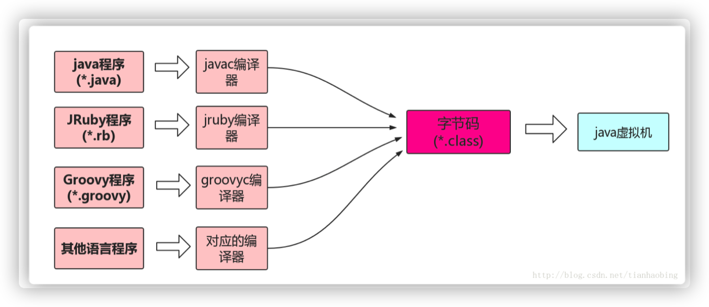

语言的性能与是否面向过程或者面向对象无关，大部分看语言的执行方式，我觉得性能大概是机器码（不用编译）>C,C++(编译）>、java(半编译半解释)>html(解释)
错误解释：面向过程性能比面向对象高是因为面向对象类调用时需要实例化，开销比较大，比较消耗资源
正确解释：面向对象也需要分配内存，计算内存偏移量，哪怕main()函数中没有调用一些函数，那些函数依然会被编译，真正原因是半编译语言，最终的执行代码并不是可以直接被CPU执行的二进制机器码。Java为了一次代码处处执行（即可移植性），有了一层中间码即字节码，而字节码转换成机器码的工作由JVM完成（C则直接编译为机器码）。
结论：Java为了可移植性牺牲了性能

C移植性差：其编译出的输出文件的格式，只适用于某种CPU，其他不认识，因为不同CPU指令集（add之类的助记符、汇编的编写格式与标准）不同。

与其说是Java虚拟机，不如说是Class文件虚拟机。